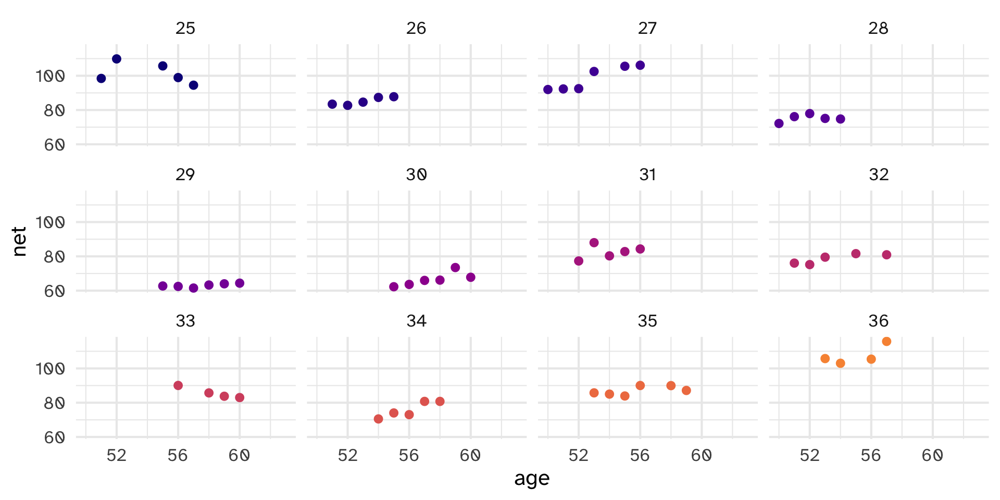
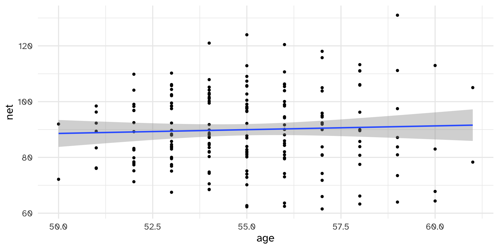
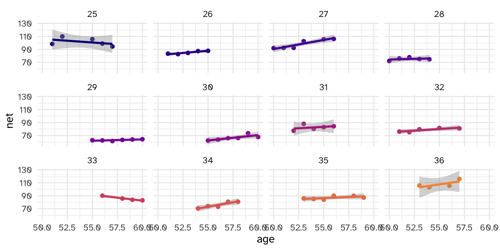
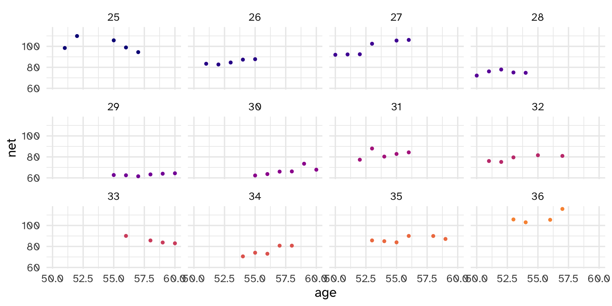
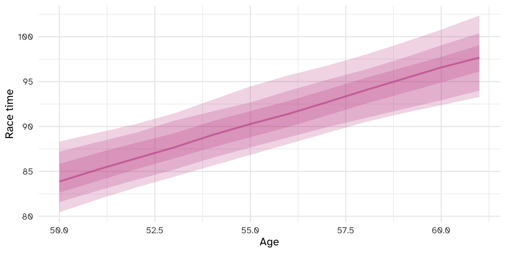
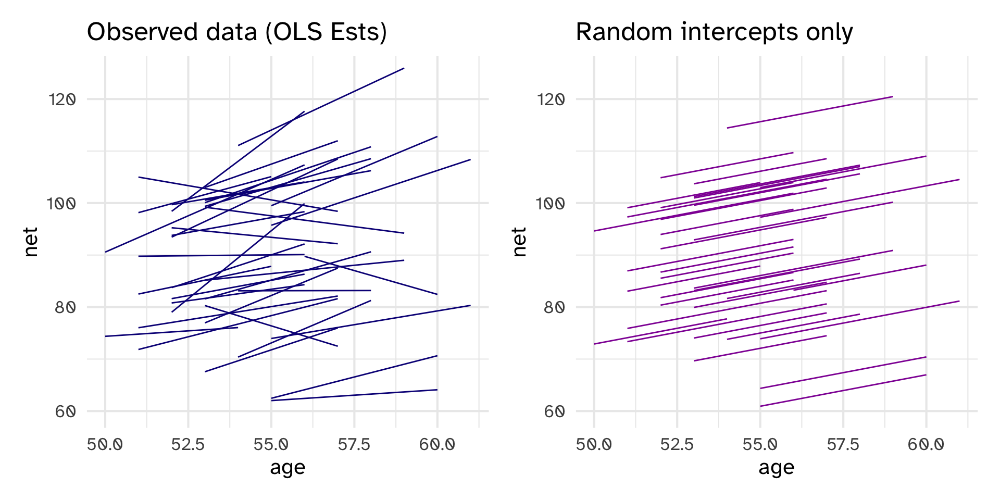
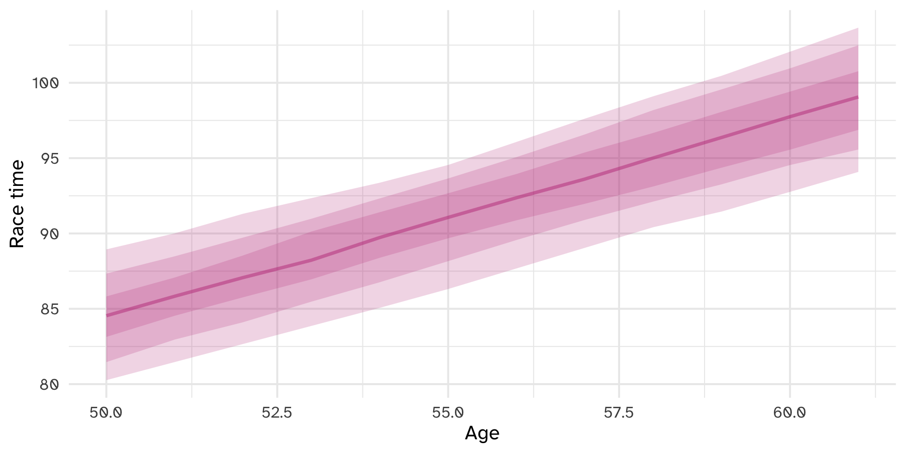
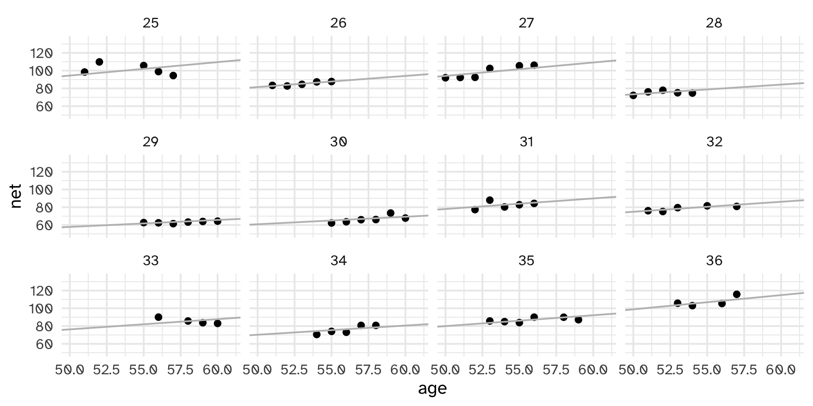
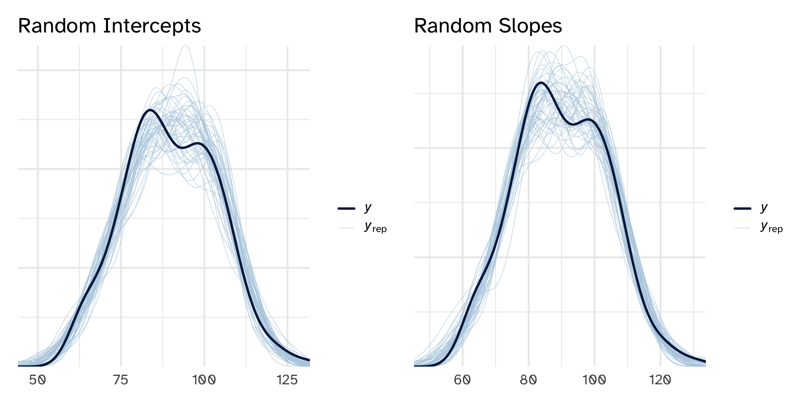

Normal Hierarchical Models with Predictors
Day 26
Carleton College
Stat 340 - Fall 2025
Goals for final project (modeling)
- Be able to write down math of the model that you fit
- Be able to pull out results at global and group level in order to make plots and draw inferences
cherry_blossom_runners
Warning!
Many built in functions that we like (add_linpred_draws, etc.) require no missing values in the data. So it can help to select your variables of interest, and then drop_na rows in your dataset. Make sure to name this something new instead of overwriting the original data, just in case.
Complete Pooling
- assumes one “pool” of data
- ignores variability within runners
- violates independence assumption of linear regression
No pooling
- separately fit a linear model for each runner
- ignores variability across runners
- “throws out” majority of data for each model fit
Partial pooling (via Hierarchical Model)
- acknowledge the grouping structure of the data
- allows to fit individual variability, but also the shared information across all individuals/groups

Complete pooling
No pooling
Hierarchical model with varying intercepts: idea
Hierarchical model with varying intercepts: model
Layer 1: within runners
\[ \begin{aligned} Y_{i_j} &\sim N(\mu_{i_j}, \sigma_y) \\ \mu_{i_j} &= \beta_{0_j} + \beta_1 X_{i_j} \end{aligned} \]
- \(\beta_{0_j}\) is the runner-specific intercept for runner \(j\). It is group-specific.
- \(\beta_1\) is the global coefficient (no subscripts) for the effect of age on race time. It is shared across all runners.
- \(\sigma_y\) is the within-runner variability for the regression model. It measures the strength of the relationship between an individual runner’s age and their race time. It is also global and shared across all runners.
Layer 2: between runneres
\[ \beta_{0_j} \sim N(\beta_0, \sigma_0) \]
- \(\beta_0\) is the global average intercept across all runners, or the average runner’s race time
- \(\sigma_0\) is the between-runner variability around that global average, or how much race times bounce around the average
Layer 3: global parameters
- \(\beta_0\): Average race time for all runners
- \(\beta_1\): Effect of age on race time for all runners
- \(\sigma_y\): Within-runner variability of race time
- \(\sigma_0\): Between-runner variability of average runner race time
Hierarchical model with varying intercepts: fully specified model
\[ \begin{aligned} Y_{i_j} &\sim {N}(\mu_{i_j}, \sigma_y) & \text{Race times within runners } j \\ \mu_{i_j} &= \beta_{0_j} + \beta_1 X_{i_j} & \text{Linear model of within-runner variation} \\ \beta_{0_j} &\sim {N}(\beta_0, \sigma_0) & \text{Variability in average times between runners} \\ \\ \beta_0 &\sim \text{Some prior} & \text{Global priors} \\ \beta_1 &\sim \text{Some prior} \\ \sigma_y &\sim \text{Some prior} \\ \sigma_0 &\sim \text{Some prior} \end{aligned} \]
Alternative approach: offsets
\[ \beta_{0_j} = \beta_0 + b_{0_j} \]
These offsets come from a normal distribution with some standard deviation \(\sigma_0\):
\[ b_{0_j} \sim {N}(0, \sigma_0) \]
We can add these offsets directly to the model:
\[ \begin{aligned} Y_{i_j} &\sim {N}(\mu_{i_j}, \sigma_y) & \text{Race times within runners } j \\ \mu_{i_j} &= (\beta_0 + b_{0_j}) + \beta_1 X_{i_j} & \text{Linear model of within-runner variation} \\ b_{0_j} &\sim {N}(0, \sigma_0) & \text{Random runner offsets} \\ \\ \beta_0 &\sim \text{Some prior} & \text{Global priors} \\ \beta_1 &\sim \text{Some prior} \\ \sigma_y &\sim \text{Some prior} \\ \sigma_0 &\sim \text{Some prior} \end{aligned} \]
Fit the model
model_running_ranint <- stan_glmer(
net ~ age + (1 | runner),
data = runners,
family = gaussian,
prior_intercept = normal(100, 10),
prior = normal(0, 2.5, autoscale = TRUE),
prior_aux = exponential(1, autoscale = TRUE),
prior_covariance = decov(reg = 1, conc = 1, shape = 1, scale = 1),
chains = 4, cores = 4, iter = 5000*2, seed = 84735, refresh = 0)
save(model_running_ranint, file = "26-ranint.rda")Warning!
Hierarchical models can run slow. Add #| cache: true to your chunk when rendering to get quarto to save the results for you and speed up rendering. Or use the save and load approach here with #| eval: false
# A tibble: 2 × 5
term estimate std.error conf.low conf.high
<chr> <dbl> <dbl> <dbl> <dbl>
1 (Intercept) 22.5 12.5 6.38 38.6
2 age 1.24 0.223 0.953 1.53- There is an 80% probability that the global intercept is between 6.38 and 38.56 minutes
- The typical runner slows down by about 1.23 minutes on average. There’s an 80% probability that this slowdown is between .85 and 1.52 minutes
- This is very different than the complete pooling approach, which found no significant slowdown
Typical runner (mean model)
Individual runners (mean model)
runners |>
filter(runner %in% c("4", "5")) |>
add_linpred_draws(model_running_ranint, ndraws = 100) |>
ggplot(aes(x = age, y = net, col = runner, fill = runner)) +
stat_lineribbon(aes(y = .linpred), alpha = 0.2) +
labs(x = "Age", y = "Race time", col = "") +
scale_fill_viridis_d(end = .75, option = "plasma") + scale_color_viridis_d(end = .75, option = "plasma") Individual runners (predictions)
runners |>
filter(runner %in% c("4", "5")) |>
add_predicted_draws(model_running_ranint, ndraws = 100) |>
ggplot(aes(x = age, y = net, col = runner, fill = runner)) +
stat_lineribbon(aes(y = .prediction), alpha = 0.2) +
labs(x = "Age", y = "Race time", col = "") +
scale_fill_viridis_d(end = .75, option = "plasma") + scale_color_viridis_d(end = .75, option = "plasma") Variance decomposition
# A tibble: 2 × 3
term group estimate
<chr> <chr> <dbl>
1 sd_(Intercept).runner runner 13.3
2 sd_Observation.Residual Residual 5.26- The \(\sigma_y\) term here is __________ , which means that within any runner, their race times vary by __________ minutes around their individual race time average.
- \(\sigma_0\), on the other hand, is ____________, which means that average runner speeds vary or bounce around by ______________ minutes across runners. There’s thus more variation between runners than within individual runners.
Variance decomposition
# A tibble: 2 × 5
term group estimate sigma_2 props
<chr> <chr> <dbl> <dbl> <dbl>
1 sd_(Intercept).runner runner 13.3 176. 0.865
2 sd_Observation.Residual Residual 5.26 27.6 0.135Neat! 87% of the variability in race times comes from between-runner differences, while 13% comes from variations within individual runners.
Hierarchical Models with varying intercepts and slopes
Is random intercepts enough?
Model building: Layer 1
Getting random slopes into the model requires some tinkering with the formal model structure
With layer 1 (within-runner variation), we now use \(\beta_{1_j}\) instead of the global \(\beta_1\) term from before, showing that each runner \(j\) gets their own \(\beta_1\):
\[ \begin{aligned} Y_{i_j} &\sim {N}(\mu_{i_j}, \sigma_y) \\ \mu_{i_j} &= \beta_{0_j} + \beta_{1_j} X_{i_j} \end{aligned} \]
Model building: Layer 2
In the non-offset-based syntax, we can then say that both \(\beta_{0_j}\) and \(\beta_{1_j}\) follow some random distribution with coefficient-specific variance (\(\sigma_0\) and \(\sigma_1\) now instead of just \(\sigma_0\)):
\[ \begin{aligned} \beta_{0_j} \sim {N}(\beta_0, \sigma_0) \\ \beta_{1_j} \sim {N}(\beta_1, \sigma_1) \end{aligned} \]
Model building: Layer 2 continued
Life gets a little trickier with these terms because \(\beta_{0_j}\) and \(\beta_{1_j}\) are correlated and move together within each runner. So we have to consider them together:
\[ \left( \begin{array}{c} \beta_{0_j} \\ \beta_{1_j} \end{array} \right) \sim {N} \left( \left( \begin{array}{c} \beta_0 \\ \beta_1 \\ \end{array} \right) , \,\Sigma \right) \]
Written like this, we can draw values for \(\beta_{0_j}\) and \(\beta_{1_j}\) from a multivariate (or joint) normal distribution with a shared covariance \(\Sigma\):
\[ \Sigma = \left( \begin{array}{cc} \text{Var}_{\beta_0} & \text{Cov}_{\beta_0, \beta_1} \\ \text{Cov}_{\beta_0, \beta_1} & \text{Var}_{\beta_1} \end{array} \right) \]
Easier to express beliefs about correlation than covariance, so decompose further:
\[ \begin{aligned} \rho_{\beta_0, \beta_1} &= \frac{\sigma_{\beta_0, \beta_1}}{\sigma_{\beta_0} \sigma_{\beta_0}} \\ \sigma_{\beta_0, \beta_1} &= \rho_{\beta_0, \beta_1}\, \sigma_{\beta_0} \sigma_{\beta_0} \end{aligned} \] so we can rewrite \(\Sigma\) as:
\[ \Sigma = \left( \begin{array}{cc} \sigma^2_{0} & \rho_{0, 1}\, \sigma_{0} \sigma_{1} \\ \dots & \sigma^2_{1} \end{array} \right) \]
Full model:
\[ \begin{aligned} Y_{i_j} &\sim {N}(\mu_{i_j}, \sigma_y) & \text{Race times within runners } j \\ \mu_{i_j} &= \beta_{0_j} + \beta_{1_j} X_{i_j} & \text{Linear model of within-runner variation} \\ \left( \begin{array}{c} \beta_{0_j} \\ \beta_{1_j} \end{array} \right) &\sim {N} \left( \left( \begin{array}{c} \beta_0 \\ \beta_1 \\ \end{array} \right) , \, \left( \begin{array}{cc} \sigma^2_{0} & \rho_{0, 1}\, \sigma_{0} \sigma_{1} \\ \dots & \sigma^2_{1} \end{array} \right) \right) & \text{Variability in average runner intercepts and slopes} \\ \\ \beta_{0_c} &\sim {N}(100, 10) & \text{Prior for global average} \\ \beta_1 &\sim {N}(2.5, 1) & \text{Prior for global age effect} \\ \sigma_y &\sim \operatorname{Exponential}(1/10) & \text{Prior for within-runner variability} \\ \sigma_0 &\sim \operatorname{Exponential}(1/10) & \text{Prior for between-runner intercept variability} \\ \sigma_1 &\sim \operatorname{Exponential}(1/10) & \text{Prior for between-runner slope variability} \\ \rho &\sim \operatorname{LKJ}(1) & \text{Prior for between-runner variability} \end{aligned} \]
Offset-based notation
\[ \begin{aligned} Y_{i_j} &\sim {N}(\mu_{i_j}, \sigma_y) & \text{Race times within runners } j \\ \mu_{i_j} &= (\beta_{0c} + b_{0_j}) + (\beta_1 + b_{1_j}) X_{i_j} & \text{Linear model of within-runner variation} \\ \left( \begin{array}{c} b_{0_j} \\ b_{1_j} \end{array} \right) &\sim {N} \left( \left( \begin{array}{c} 0 \\ 0 \\ \end{array} \right) , \, \left( \begin{array}{cc} \sigma^2_{0} & \rho_{0, 1}\, \sigma_{0} \sigma_{1} \\ \dots & \sigma^2_{1} \end{array} \right) \right) & \text{Variability in average runner intercepts and slopes} \\ \\ \beta_{0_c} &\sim {N}(100, 10) & \text{Prior for global average} \\ \beta_1 &\sim {N}(2.5, 1) & \text{Prior for global age effect} \\ \sigma_y &\sim \operatorname{Exponential}(1/10) & \text{Prior for within-runner variability} \\ \sigma_0 &\sim \operatorname{Exponential}(1/10) & \text{Prior for between-runner intercept variability} \\ \sigma_1 &\sim \operatorname{Exponential}(1/10) & \text{Prior for between-runner slope variability} \\ \rho &\sim \operatorname{LKJ}(1) & \text{Prior for between-runner variability} \end{aligned} \]
Setting priors in {rstanarm}
- \(\beta_{0,c}\):
prior_intercept - \(\beta_{\square}\):
prior - \(\sigma_\square\):
prior_aux - \(\Sigma\):
prior_covariance = decov(reg = 1, conc = 1, shape = 1, scale = 1)
LKJ prior for correlation
If LKJ = 1, uniform correlations
If LKJ >>> 1, correlations much closer to 0

prior_covariance = decov(reg = 1, conc = 1, shape = 1, scale = 1)
reg= LKJ parameterconc= concentration hyperparameter for dirichlet distribution on variance componentsshapeandscale= gamma hyperparameters for individual variance components
Fitting the model
model_running_ranslope <- stan_glmer(
net ~ age + (1 + age | runner),
data = runners,
family = gaussian,
prior_intercept = normal(100, 10),
prior = normal(2.5, 1),
prior_aux = exponential(1, autoscale = TRUE),
prior_covariance = decov(reg = 1, conc = 1, shape = 1, scale = 1),
chains = 4, cores = 4, iter = 5000*2, seed = 84735, refresh = 0, adapt_delta = 0.9)
save(model_running_ranslope, file = "26-ranslope.rda")adapt_delta
adapt_delta is a tuning parameter for the MCMC algorithm (default is 0.95). Closer to 1 = much slower but more stable.
Global parameters
# A tibble: 2 × 5
term estimate std.error conf.low conf.high
<chr> <dbl> <dbl> <dbl> <dbl>
1 (Intercept) 18.6 11.8 3.51 33.4
2 age 1.32 0.217 1.04 1.60- \(\beta_0\) is the overall global intercept for all runners. There’s an 80% chance that it’s between 3.5 and 33.4 minutes.
- \(\beta_1\) shows that a typical runner slows down by a posterior mean of 1.31 minutes each year. There’s an 80% chance that the effect is between 1.04 and 1.6 minutes, which is “significant” and substantial. It’s also really close to the 1.36-year effect we found with just random intercepts.
Typical runner (mean model)
Individual runners (mean model)
runners |>
filter(runner %in% c("4", "5")) |>
add_linpred_draws(model_running_ranslope, ndraws = 100) |>
ggplot(aes(x = age, y = net, col = runner, fill = runner)) +
stat_lineribbon(aes(y = .linpred), alpha = 0.2) +
labs(x = "Age", y = "Race time", col = "") +
scale_fill_viridis_d(end = .75, option = "plasma") + scale_color_viridis_d(end = .75, option = "plasma") Individual runners (predictions)
runners |>
filter(runner %in% c("4", "5")) |>
add_predicted_draws(model_running_ranslope, ndraws = 100) |>
ggplot(aes(x = age, y = net, col = runner, fill = runner)) +
stat_lineribbon(aes(y = .prediction), alpha = 0.2) +
labs(x = "Age", y = "Race time", col = "") +
scale_fill_viridis_d(end = .75, option = "plasma") + scale_color_viridis_d(end = .75, option = "plasma") Variance terms
# A tibble: 4 × 3
term group estimate
<chr> <chr> <dbl>
1 sd_(Intercept).runner runner 1.32
2 sd_age.runner runner 0.250
3 cor_(Intercept).age.runner runner -0.0795
4 sd_Observation.Residual Residual 5.16 - \(\sigma_y\) is __________, which means that within any runner, their race times vary by ___________ minutes around their individual race time average.
- \(\sigma_0\) is __________, which means that average runner speeds vary or bounce around by __________ minutes across runners.
- \(\sigma_1\) is __________, which means that average age effects vary by __________ minutes across runners.
- \(\rho\) is __________, which means the correlation between runner-specific slopes and intercepts is __________
Wait a second
runner_summaries_ranslope <- model_running_ranslope |>
spread_draws(`(Intercept)`, b[term, runner], `age`) |>
pivot_wider(names_from = term, names_glue = "b_{term}",
values_from = b) %>%
mutate(runner_intercept = `(Intercept)` + `b_(Intercept)`,
runner_age = age + b_age) |>
group_by(runner) |>
summarize(runner_intercept = median(runner_intercept),
runner_age = median(runner_age))
head(runner_summaries_ranslope)# A tibble: 6 × 3
runner runner_intercept runner_age
<chr> <dbl> <dbl>
1 runner:1 18.6 1.06
2 runner:10 18.6 1.75
3 runner:11 18.6 1.32
4 runner:12 18.5 0.978
5 runner:13 18.6 1.16
6 runner:14 18.6 1.39 Wait a second
Posterior predictive checks
Prediction summaries
mae mae_scaled within_50 within_95
1 2.58843 0.4493517 0.6864865 0.972973 mae mae_scaled within_50 within_95
1 2.533069 0.4461603 0.7081081 0.972973